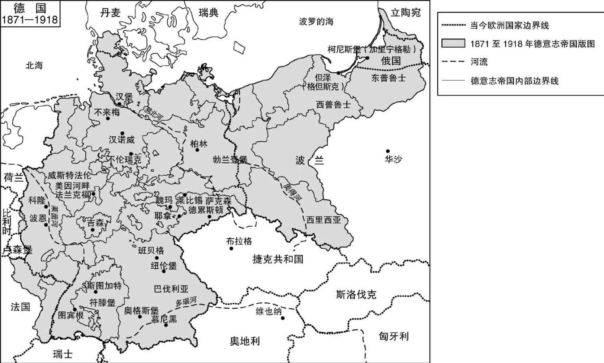

文学不只是文本，因为文本不只是文本。文本总在变化，并且也在改变它们的读者，把读者的视线引向文本和读者之外，引向文本所讲述的东西。一篇介绍一个民族的文学的文字，再怎么简短，也不可能只介绍其文本，而是也要介绍这个民族。若问德国文学是怎样的，就等于询问—从文学的角度来看—德国是怎样的。18世纪诞生了两种特色鲜明的现代文学类型，即主观抒情诗歌和客观现实主义小说，自那以后，现代主义的文学世界里就存在着两种声音。德国发声了，振聋发聩地站在了其中一边：饱含诗意、悲剧、果断的反思和潜意识的宗教意义。另一种声音—小说家的，现实主义的，时而滑稽有趣，时而谆谆教诲—在德国的传统中一直较为微弱，却也不曾静默。本书关注的是德国文学对我们的现代自我认知有益的特征，因此也关注与之相关的社会共同体的特征及语言，德语作家们首先是用语言表达了他们自己。关于这个共同体要说的第一件事是，尽管德国在地理、历史和文化方面均是欧洲的中心，但这个中心并不统一，而且从未统一过。
从英国的角度来看，“中欧”大约意味着特兰西瓦尼亚以1北某个不确定的地方。但是当代德国人却用“中欧”一词来描述他们所生活的地区，而且言之凿凿。自从罗马衰落之后，欧洲由北至南、由东至西的贸易路线在德国境内相交。形形色色的现代德语从莱茵河说到伏尔加河，从芬兰边境说到意大利阿尔卑斯山南麓。几个世纪以来，德国人在战争与和平中和法国人、意大利人、匈牙利人、斯拉夫人，以及斯堪的纳维亚的邻居们交换语言、文化，还有基因。（除了德国、奥地利和瑞士，德语还是比利时、匈牙利、意大利、列支敦士登、卢森堡、纳米比亚和波兰的部分地区或全境的官方语言。）虽然缺乏明确的地理分界线，德国一直是周边国家确立其欧洲身份的一个基准点，而它自己却没有确立一个身份。操德语的人从未被统一在一个自称为德国的独一无二的国家之中，希特勒也没有做到这一点。冠以此名的现代国家有着独特的历史，是漫长而复杂的发展的结果。1990至1991年间联邦和民主两个共和国联合到一起的过程被视为“再统一”，然而由此诞生的国家却拥有和它的每一个前身都不尽相同的边界线，较年老的子民中的很大一部分都出生在国境以外，包括那些长久以来甚或几百年以来就自认为属于德国的地区。欧洲另外两个主要说德语的国家奥地利和瑞士的身份则拥有更多的连贯性，即使奥地利曾经作为一个帝国的中心，以各种名称从1526年持续到1918年，经过多重截肢的创伤达到了今天的平衡状态。说德语的瑞士，尽管每个州都有自己的历史，从15世纪或更早的时候开始，就不依赖于其他德语国家独自发展了。

图1 德国1871至1918年间版图最大的时期
被称为德语文学的文学其实是三种独立的文学，来自三个分离的国家，就如同我们说起英国、美国和澳大利亚这三国的文学一样界限分明。不能因为迪伦马特的戏剧在柏林上演就把他归为德国作家，正如不能因为阿瑟·米勒的戏剧在伦敦上演就把他归为英国作家，而称卡夫卡是德国小说家就好像称谢默斯·希尼是英国诗人一样：若非要这么说，也不是全无道理，但也只是因为这一方面指向了作家的出身和素材，另一方面暗示了他的媒体和受众。本书关注的是如今被称为德国的那个国家的文学，这需要与奥地利和瑞士的文学区别对待，以便让它自己特有的发展脉络变得明晰。虽说是漫谈，还是得讲述一段独一无二的历史故事，而且不能脱离特殊的政治、社会，甚至是经济背景。
为了呈现德国故事的连贯性，我将从中世纪的政治和文化发展概要讲起，并不涉及个别的作家。接下来的四章遵循同样的框架，但会给出更多的细节。讲述中世纪和奥地利及瑞士文学的章节可在因特网上找到（http://www.mml.can.ac.uk/german/staff/nb215）。遗憾不能在本书中见到卡夫卡的读者可以在这里找到一个鲜活的卡夫卡：里奇·罗伯逊所著的《卡夫卡是谁》（牛津大学出版社，2004），其中的第一和第四章特别值得一读。